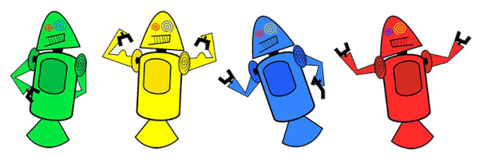

História do Mascote do Android
Provavelmente você sabe que o sistema operacional lank Android, mantido pelo Google é um dos mais utilizados para dispositivos móveis em todo o mundo. Mas tavez você não saiba que o seu simpático mascote tem um nome e uma história muito curiosa? Pois acompanhe esse artigo para aprender muita coisa sobre esse robozinho.
A primeira versão
A primeira tentativa de criar um mascote surgiu em 2007 e veio de um desenvolvedor chamado Dan Morrill ∞. Ele conta que abriu o Inkscape ∞ e criou sua própria versão de robô. O objetivo era apenas personificar o sistema apenas para a a sua equipe, não existia nenhuma solicitação da empresa para a criação de um mascote.
Essa primeira versão bizarra até foi batizada em homenagem ao seu criador: seriam os
Dandroids.
Surge um novo mascote
A ideia de ter um mascote foi amadurecendo e a missão foi passada para uma profissional da área. A ilustradora Russa Irina Blok ∞, também funcionária do Google, ficou com a missão de representar o pequeno robô de uma maneira mais a
A ideia principal da Irina era representar tudo graficamente com poucos traços e de forma mais chapada. O desenho também deveria gerar identificação rápida com quem o olha. Surgiu então o Bugdroid, o novo mascote do Android.

A principal inspiração para os traços do novo Bugdroid veio daqueles bonequinhos que ilustram portas de banheiro para indicar o gênero de cada porta. Conta a lenda que a artista estava criando em sua mesa no escritório do Google e olhou para o lado dos banheiros e a identificação foi imediata: simples, limpo, objetivo.